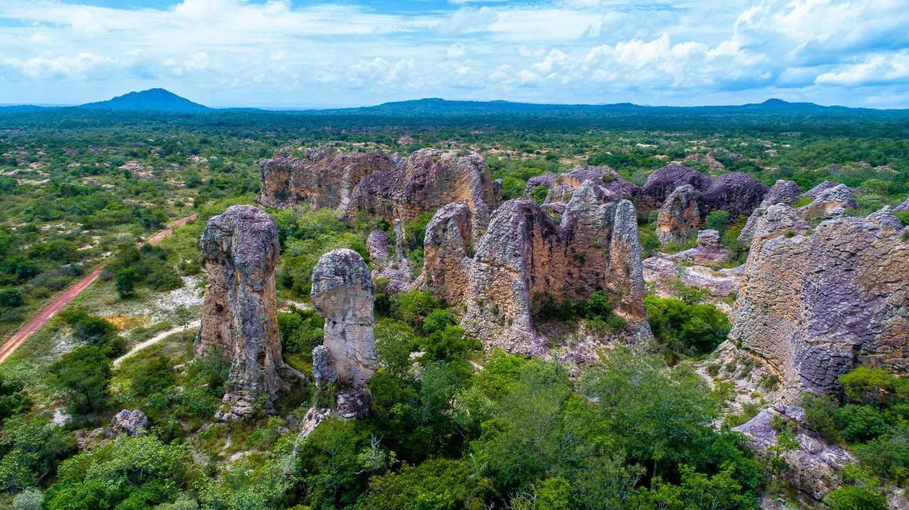

O Piauí é um estado em que o interior é mais desenvolvido que o litoral. Sua capital, Teresina, é a única do Nordeste que não está as margens do Oceano Atlântico. Seu litoral é pequeno. São 66 Km de praias de águas mornas e coqueirais.
O rio Parnaíba, que durante quase todo o seu curso separa o Piauí do Maranhão deságua no Oceano formando o magnífico Delta do Parnaíba, com cerca de 80 ilhas que se espalham pelos canais.
O Estado ocupa uma área heterogênea, apresentando características de cerrado, da Amazônia e do Nordeste semi-árido. Seu solo é muito antigo, rico em achados pré-históricos e inscrições rupestres.
Teresina tem várias praias de água doce às margens do Rio Parnaíba. Ela possui diversos atrativos naturais e culturais que merecem ser vistos.
Nos seus 2.700 Km2, o Delta do Parnaíba exibe por todos os lados um inacreditável cenário de ilhas, ilhotas, manguezais e dunas a perder de vista, rodeado por muita água doce que, antes de desaguar no mar, serpenteia por toda a região desde a Chapada d as Mangabeiras.
Em Parnaíba, uma das mais antigas cidades do Estado, a 330 Km de Teresina, vale a pena visitar o Porto das Barcas, o primeiro núcleo formado da região. Foi em torno desse porto que a cidade nasceu, no final do século 17, impulsionada pelo comércio das charqueadas (carne seca).
No município vizinho de Luís Correia, são as praias de Atalaia e Coqueiro o centro de agitação, com suas dezenas de barracas de caranguejos, siris, lulas e peixes. A lagoa do Portinho, rodeada por imensas dunas e manguezais, é outro local imperdível do roteiro turístico do litoral piauiense.
O Parque Nacional de Sete Cidades está localizado a 202 Km de Teresina. Sua área com 6.300 hectares, possui formações rochosas que parecem, realmente, sete cidades, com ruas praças e monumentos.

A 650 Km ao sul de Teresina, pesquisadores identificaram grande concentração de sítios pré-históricos, alguns possivelmente datados de 40 mil anos.
O parque Nacional da Serra da Capivara é o único Parque Nacional com ecossistema típico de caatinga.
O parque foi tombado pela UNESCO como Patrimônio Histórico da Humanidade, pois inscrições rupestres, fósseis e utensílios pré-históricos fazem do local um dos mais importantes achados arqueológicos da atualidade.